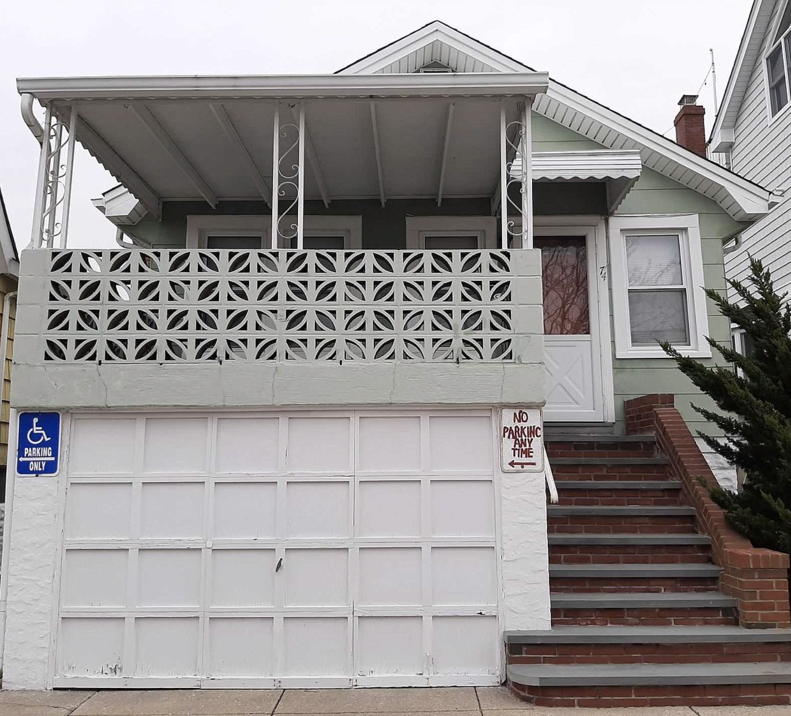
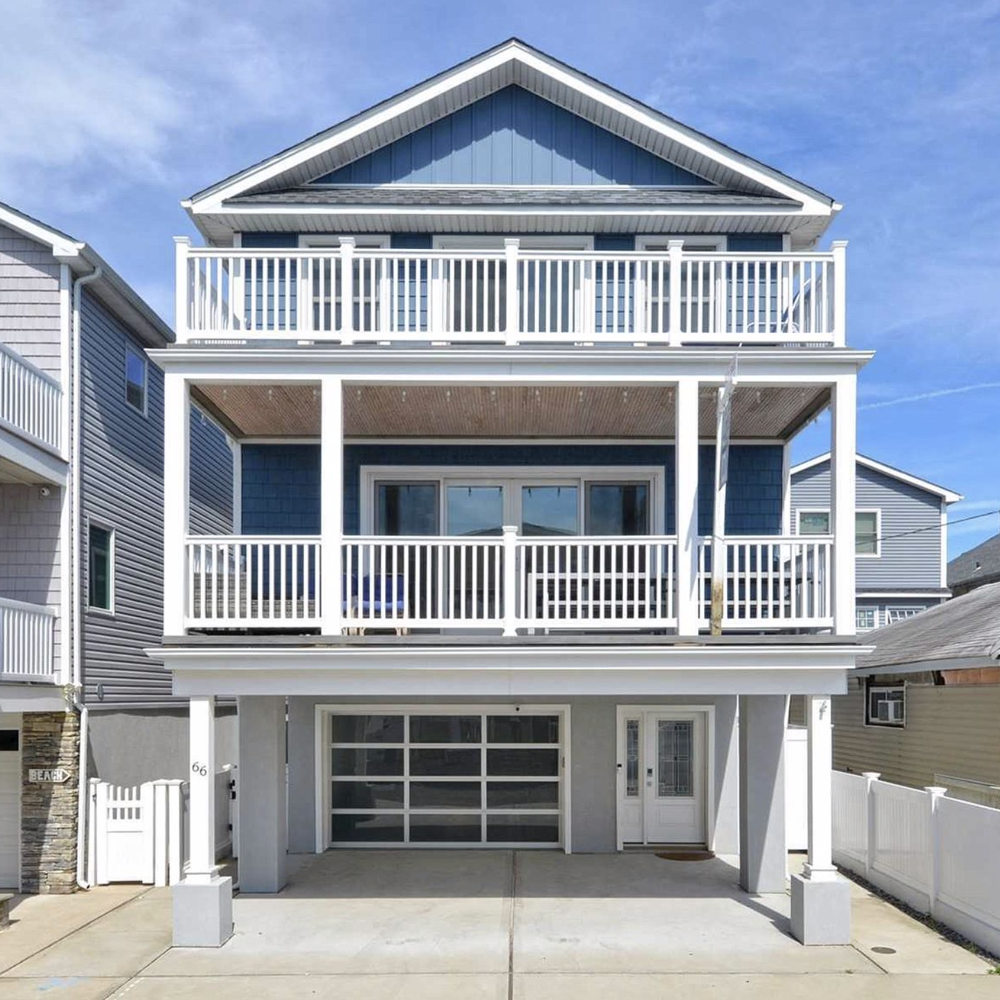

Long Beach Real Estate Development

Long Beach Real Estate Development
During the spring and summer of 2020, I programmed a computer software that analyzes the profitability of real estate investments in Long Beach, New York. The computer program sources single-family property data for over 1,600 houses in Long Beach from Nassau County's Public Record website, https://lrv.nassaucountyny.gov/. By using this data effectively, real estate investors in single-family houses in Long Beach can make more informed decisions with regard to flipping these houses. The data is automatically updated with each time that the program is run.
Long Beach sparked my interest its houses are within walking distance of the highly-desired long island beaches, and more importantly because many of these houses are similar models built by one developer during the early 1920s. Similarity between houses provides opportunity to compare between each as potential investment opportunities.
Impact of COVID-19: In the height of the COVID-19 pandemic, there were massive migrations from urban areas to suburban and coastal areas because of the transition remote work and online school. This led to a surge in eastern long island beach town real estate markets because many New Yorkers no longer had to work in offices and had less reason to live in small apartments. I believe this surge in eastern long island beach towns can and should apply to Long Beach because it is closer in proximity to New York than say, the Hamptons, but it offers access to the same beaches.
With every purchase of an original house developed in the 1920s, the software records the sale price and location. Further, with every purchase of a renovated or rebuilt house where an original house once was, the sales price and location are recorded. Additionally, for all houses the square footage, lot size, beds, baths, parking spaces, proximity to beach, presence of a pool, attic, and basement are all stored. This allows for neighborhood development analysis and can provide potential real estate investors with unique insight into the Long Beach real estate markets.
Original Developed House
Rebuilt or Renovated House
The user inputs the address of a house with which they are considering an investment. This address must exist and be from one of the twenty-five streets that I have covered in this software. The program then updates and stores information about all other houses' sales histories and their characteristics at the time of each sale (including square footage, lot size, beds, baths, etc.). When collecting data, the program determines which houses can be used as a reference point for the target house based on their similiarities. I have developed a comparibility algorithm which provides this functionality:

Once a list of comparable houses to a target house is obtained, a real estate investor has many examples of both profitable and unprofitable single-family real estate investements. For every house that was profitably flipped, the difference in sales prices (adjusted for inflation) yields the maximum dollar amount that can be spent to remain profitable.
If interested about this software please reach out to me by email at maxhorowitz@gmail.com. I look forward to hearing from you.